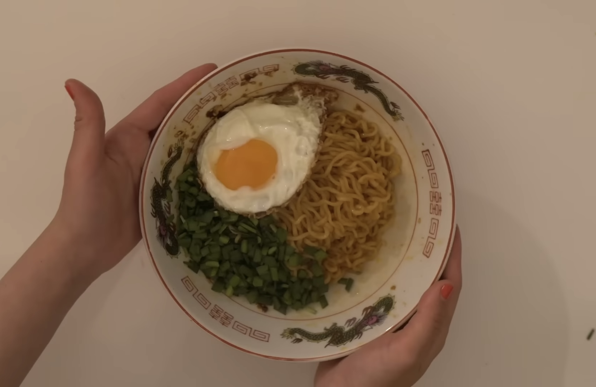
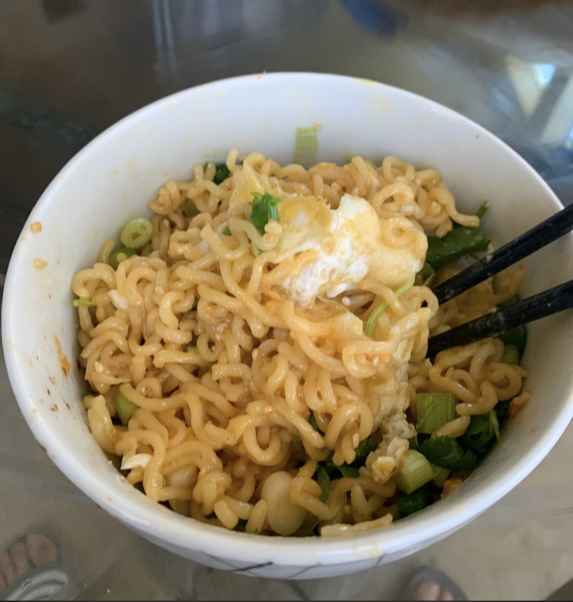

Doobydobap's Chili Oil Ramen

Description
Doobydobap is one of my most favorite YouTubers today! She makes aesthetic food content videos
that really spark inspiration into my own cooking. She is usually found vlogging in Seoul, South Korea
and other cool places that she visits. She gives us a peek into her everyday life as a food content-creator
and I personally love her content. In fact, I watched her vlog "a wedding" this morning (it was a great watch!).
Anyways, she posted a YouTube video teaching her followers how to make Chili Oil Ramen from Shin Instant Ramen.
I decided to give it a try yesterday and I was pretty impressed on how it turned out. Let's get into it!
Here's my attempt at it (definitely not as aesthetically pleasing lol):

Ingredients
- 1 pack of Shin Ramen
- 2 tablespoons oil
- 1 scallion
- Sesame Seeds
- 1 teaspoon black vinegar
- 1 clove minced garlic
- 1 egg
- Your choice of veggies
Steps
- First, chop up some scallion and your choice of veggies.
- In a bowl, add 2/3 of the Shin Ramen spice packet.
- Add 1 teaspoon of black vinegar and some sesame seeds into the bowl.
- Boil some water and cook the instant ramen for 3 and a half minutes.
- Add 2 teaspoons of oil into a pan on medium-high. Heat until very hot.
- Add around 1 teaspoon of the hotoil into the bowl (it should sizzle) and mix contents together.
- Add the cooked noodles into the bowl and mix well.
- Cook an egg in the oil left in the pan and add it to the bowl of noodles.
- Add scallions and veggies into the bowl and enjoy!
Return to main page